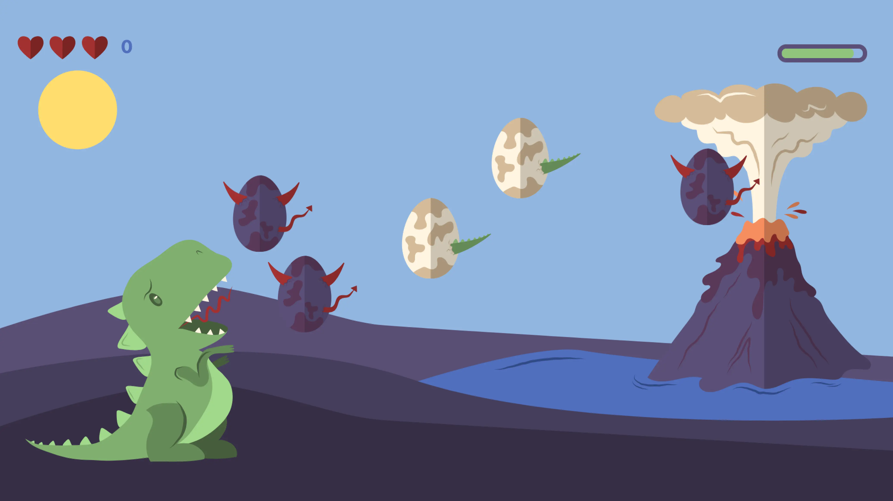
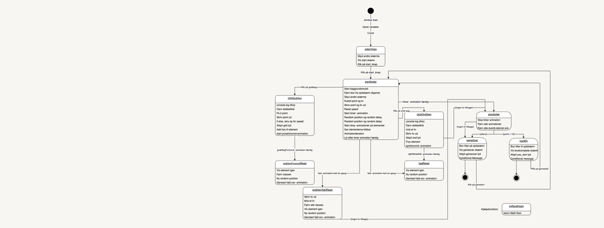
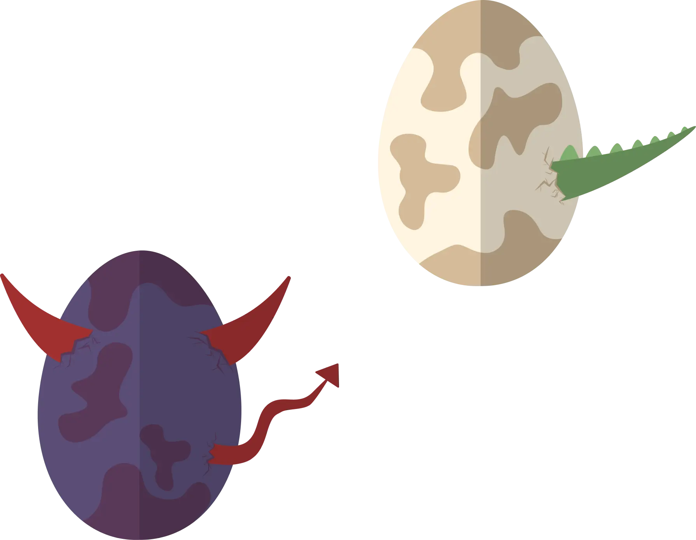
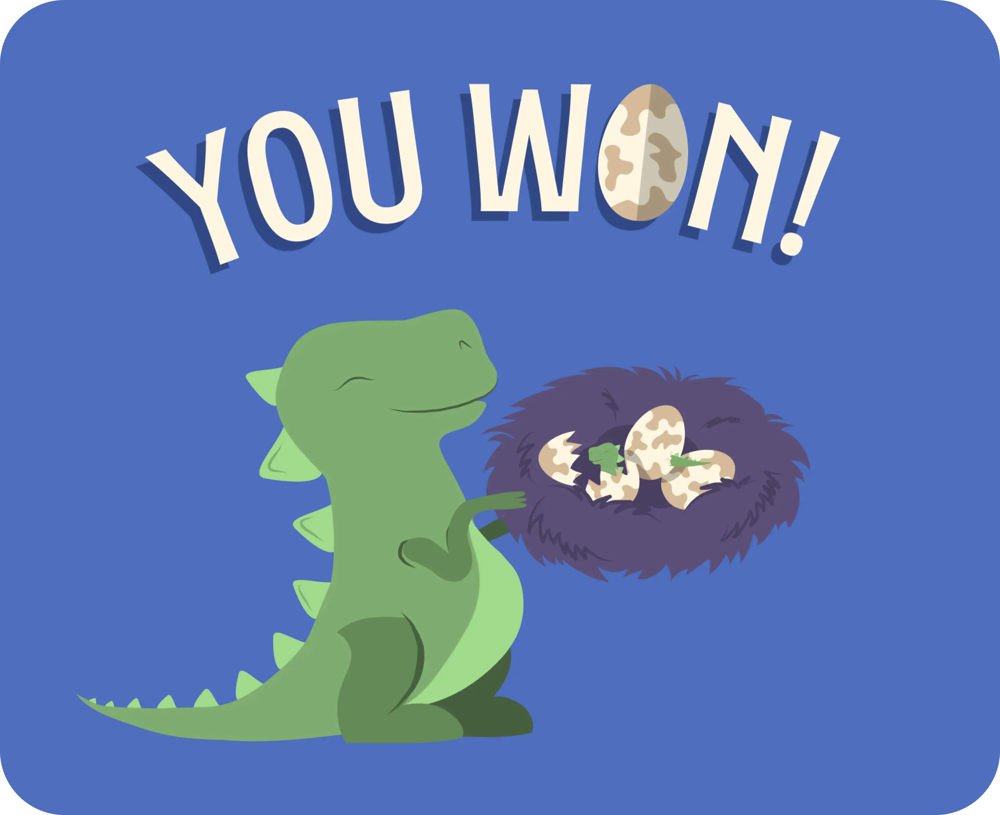

GRUNDLÆGGENDE
ANIMATION
Temaet
I dette tema udviklede vi et interaktivt spil og et dokumentationssite. Mit spil, “DINO EGGS”, handler om at hjælpe en dinomor med at finde sine æg og bringe dem sikkert tilbage til reden. Spillet indeholder funktioner som point, liv og tid, og blev designet med fokus på animation, interaktivitet og responsivt design.
Formålet
Formålet var at lære at kombinere grafisk design, CSS-animation og JavaScript til at skabe en intuitiv og brugervenlig spiloplevelse. Projektet gav erfaring med spildesignprincipper som komposition og visuel balance samt struktureringsmetoder som aktivitets- og State Machine-diagrammer.
Proces
Jeg hentede inspiration fra flat-design gennem desk research og designede spillets elementer i Adobe Illustrator som vektorgrafik. En papirprototype hjalp mig med at teste konceptet tidligt, og UML-diagrammer strukturerede spillets logik. Spillet blev derefter kodet i HTML, CSS og JavaScript, med validering og test for at sikre funktionalitet og design.
Løsning
Spillet 'DINO EGGS' er skabt med CSS-animationer og JavaScript for en enkel og underholdende brugeroplevelse, med fokus på spillets funktioner, visuelle klarhed og en struktureret opbygning. Websitet dokumenterer hele processen fra idé til færdig løsning og viser, hvordan jeg har arbejdet med både design- og udviklingsmetoder.
Læring og
refleksion
Temaet gav mig praktisk erfaring med CSS-animationer, JavaScript og spildesign. Jeg har også fået kendskab til værktøjer som Illustrator og DevTools. Projektet har styrket mine evner til at udvikle både visuelle og funktionelle brugergrænseflader, som jeg kan bruge i fremtidige projekter.
Dinoeggs